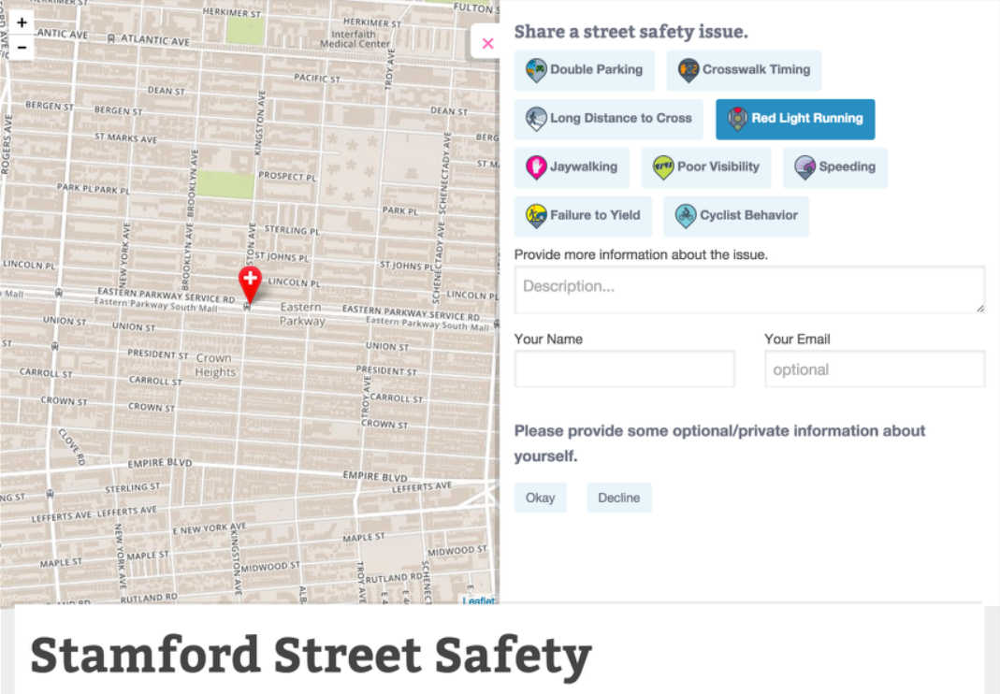
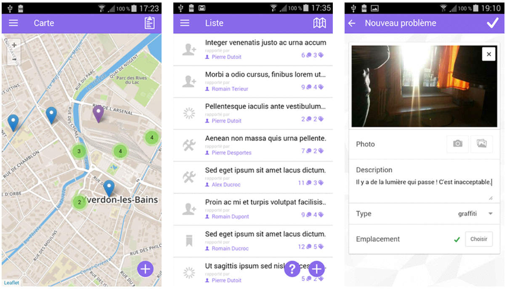

# MAS-RAD -- Advanced Front-end Development (DFA) The goal of this course is to discover concepts and tools to organize the front-end side of a web application and enrich the user interface/experience according to current good practices. You will: * learn how to make good use of a CSS framework to build a responsive HTML user interface * learn how to manipulate the DOM API with or without a library * learn how the use of a framework does help to organize the front-end code of a single page application * learn how to manage asynchronous communications with a Web API on the back-end Everything starts from here: [https://github.com/MediaComem/comem-masrad-dfa](https://github.com/MediaComem/comem-masrad-dfa) or shorter [http://heig.ch/bozope ](http://heig.ch/bozope) --- ## Citizen engagement .breadcrumbs[<a href="#1">MAS-RAD -- Advanced Front-end Development (DFA)</a>] The final deliverable of this course is a complete web application allowing a citizen to report problems encountered in the streets of a city. This idea is inspired from the [FixMyStreet platform](https://www.fixmystreet.com/) you may know. --- ## Report a problem .breadcrumbs[<a href="#1">MAS-RAD -- Advanced Front-end Development (DFA)</a>]  --- ## Front-end .breadcrumbs[<a href="#1">MAS-RAD -- Advanced Front-end Development (DFA)</a>] In this course, the focus is on the front-end side of the web application, building a rich user interface and experience.  --- ## Back-end .breadcrumbs[<a href="#1">MAS-RAD -- Advanced Front-end Development (DFA)</a>] Our web application will make use of a REST web service backend for Citizen Engagement already implemented and ready to be used. [Citizen Engagement API documentation](https://mediacomem.github.io/comem-citizen-engagement-api/) <img src='images/archi-dfa.png' width='80%' /> --- ## Features requirements .breadcrumbs[<a href="#1">MAS-RAD -- Advanced Front-end Development (DFA)</a>] * A citizen must be able to **register a new account** and **log in/out** to the app * A citizen must be able to **report an issue** at a specific location, with a description, a type of issue and optional tags * A citizen must be able to **see issues on a map** of the area and **see the details** of those issues * A citizen must be able to **filter issues** by type so as to see only some issues (on the map and/or in other screens) * A citizen must be able to **search issues** (on the map and/or in other screens) * A citizen and a staff member must be able to **post comments** on issues and to **see comments** for an issue somewhere in the app To better get what is expected, just [watch this video](https://www.youtube.com/watch?v=wki0t178x2k&feature=youtu.be). * *Bonus*: * staff member can log in to the app, start working on issues, and resolve or reject them * staff member can add, edit and remove issue types from the app --- ## Implementation requirements .breadcrumbs[<a href="#1">MAS-RAD -- Advanced Front-end Development (DFA)</a>] * The app must follow Bootstrap and AngularJS best practices * The app must use the Citizen Engagement API * The app must use HTML5 Geolocation API (e.g. to automatically determine an issue's location or center the map) * The app must use Mapbox (or an equivalent map library) --- ## Delivery .breadcrumbs[<a href="#1">MAS-RAD -- Advanced Front-end Development (DFA)</a>] Each person or group must send an e-mail **no later than May 8th 2017** to Olivier Ertz with * either the link to your Git source code repository (e.g. on GitHub) or with an archive of your source code (don't forget to comment it!) * only what is required to make your app run and use CDN links in your final delivery * a documentation (e.g. README file) that presents your approach, the organization of your solution and optionally some information to know to make it run